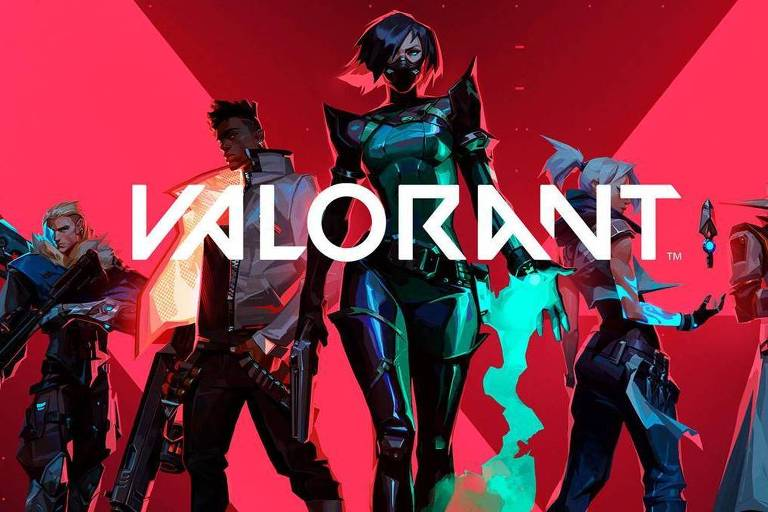
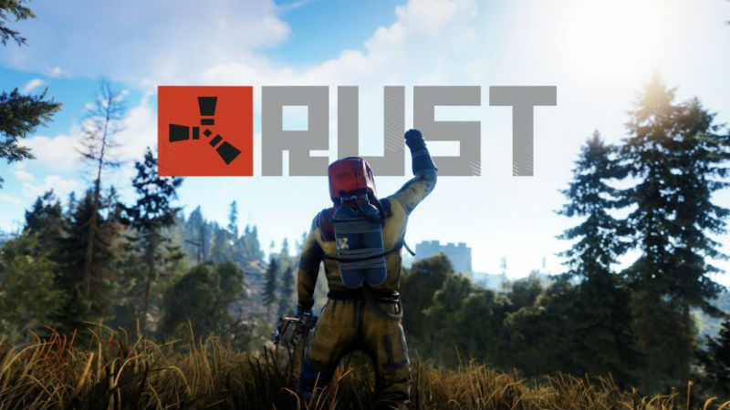

cristopher morales
 Video en vivo
Video en vivo foto/video
foto/video sentimiento/actividad
sentimiento/actividad
riot games
marzo 22 2019buenas jugadores, luego del gran exito que tuvo uno de nuestros le League of Legends , Una descripción general de los muchos tipos de habilidades en Valorant Si bien muchos juegos de FPS se enfocan únicamente en el juego de armas, Valorant se encuentra en un lugar único en el ámbito de los juegos de FPS debido a las habilidades de los agentes. Cada agente está equipado con varias habilidades únicas que pueden detener un punto, dar ventaja al equipo amigo, entorpecer al enemigo, […]

rust
8 febrero 2018Los jugadores deben recoger recursos para sobrevivir y fabricar objetos dentro del juego, a excepción del equipamiento inicial con el que se empieza, que incluye una roca y una antorcha (ocasionalmente en algunos servidores, en su mayoría los modificados, se otorga equipamiento adicional como armas de fuego, ropa y suministros). Los jugadores recolectan recursos como tela, comida, madera, chatarra y piedra. que pueden ser obtenidos cortando árboles o cazando animales, saqueando monumentos entre otros métodos, Hay una lista inicial de fabricación de objetos, como armas, ropa y materiales de construcción, y a medida que se progresa en el juego se pueden conseguir planos u objetos más avanzados para construir objetos como torretas, puertas blindadas, fusiles, francotiradores, armas automáticas, lanzacohetes y C4. Estos pueden encontrarse en cajas (con forma de cubo), personajes muertos (o casi) o investigando objetos encontrados en las bases de otros jugadores. Algunos servidores incluyen modificaciones que proveen elementos al jugador para hacer el inicio más fácil, como duplicar la cantidad de recursos obtenidos al minar menas de piedra o reducir en un 50% el mantenimiento de una base, A medida que vas avanzando, puedes conseguir componentes con los cuales podrás crear nuevos objetos que los requieran.
